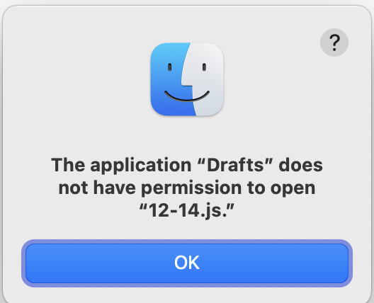

Basically, I trying to write a Script Action that is supposed which should open a link to a local file on Mac, e.g.
app.openURL("file:///Users/myname/12-14.js");
app.openURL("file:///Users/myname/My%20Document.pdf");
However, even though pretty much every URI scheme to any app works totally fine, file: seems to be the one thing that does not work. When I run that action, this is what I get:

So I looked around: The Script Reference on the app class doesn’t contain any info that could help me. This forum post only discusses opening them in link mode, but not via script, and based on this forum post, I tried this:
function openfileURL (url) {
let fileURL = decodeURI(url.slice(7));
let method = "execute";
let script = `on execute(fileURL)
tell application "Finder" to open fileURL as POSIX file
end execute`;
let runner = AppleScript.create(script);
runner.execute(method, [fileURL]);
}
But even this does not work, although testrunning the AppleScript part using the decoded URI in the Script Editor seems to work. Nevertheless, I feel like I am trying to jump through quite a lot of hoops here to get this working, while I feel like probably there is a much simpler solution I am simply missing here. 
Can anybody help me out?
App Sandbox doing its job, albeit inconvenient at times.
Your AppleScript example works here and should avoid problems, what are you getting when you run it? As long as the path I pass is a valid, existing file, it should work. The first time you run it you might have been asked to allow permissions, did you do that?
Your AppleScript example works here and should avoid problems, what are you getting when you run it?
Pretty much nothing happens. No error or warning message.
As long as the path I pass is a valid, existing file, it should work.
tested exactly the same file:// links with open "file://..." in the Terminal and that works. so the links are fine.
The first time you run it you might have been asked to allow permissions, did you do that?
Nope, I was never prompted for permission. How would I have to do give permission manually then?
Also, in case it helps, I uploaded the test action I use here: filelink test | Drafts Directory
Add alert(runner.lastError); after your runner.execute line to troubleshoot. You are likely getting an AppleScript error, but not doing anything to handle/report it in your script.
ah. I am getting this error. What does that mean?
Unable to locate application scripts directory
You should have a folder at:
~/Library/Application Scripts/com.agiletortoise.Drafts-OSX
This should get automatically created by the system after the app is installed, and is the only location Drafts can execute scripts from due to sandboxing requirements. The first time you ran any action which used AppleScript, you should have been prompt to allow Drafts access to write in that folder.
Anything unusually about your installation process, or sweeper apps you use that might have removed that folder?
1 Like
ah yes, creating that folder did the trick! I was prompted for Permission and afterwards everything worked fine. Thanks a lot!
Dunno why the folder was missing. I recently moved to a new Mac and transferred settings there mostly manually. I guess something went wrong when doing so.